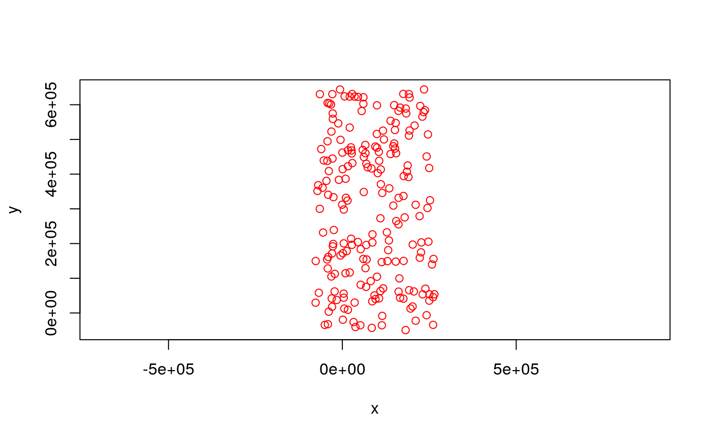
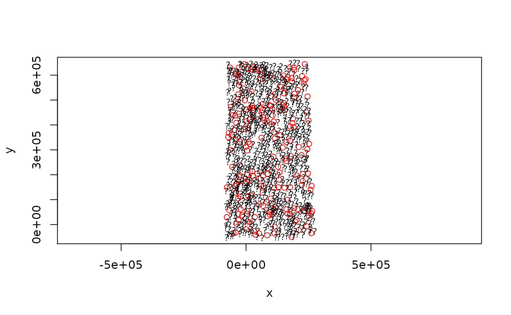

sic2004.RdThe text below was copied from the original sic2004 event, which is no longer online available.
The variable used in the SIC 2004 exercise is natural ambient radioactivity measured in Germany. The data, provided kindly by the German Federal Office for Radiation Protection (BfS), are gamma dose rates reported by means of the national automatic monitoring network (IMIS).
In the frame of SIC2004, a rectangular area was used to select 1008 monitoring stations (from a total of around 2000 stations). For these 1008 stations, 11 days of measurements have been randomly selected during the last 12 months and the average daily dose rates calculated for each day. Hence, we ended up having 11 data sets.
Prior information (sic.train): 10 data sets of 200 points that are identical for what concerns the locations of the monitoring stations have been prepared. These locations have been randomly selected (see Figure 1). These data sets differ only by their Z values since each set corresponds to 1 day of measurement made during the last 14 months. No information will be provided on the date of measurement. These 10 data sets (10 days of measurements) can be used as prior information to tune the parameters of the mapping algorithms. No other information will be provided about these sets. Participants are free of course to gather more information about the variable in the literature and so on.
The 200 monitoring stations above were randomly taken from a larger set of 1008 stations. The remaining 808 monitoring stations have a topology given in sic.pred. Participants to SIC2004 will have to estimate the values of the variable taken at these 808 locations.
The SIC2004 data (sic.val, variable dayx): The exercise consists in using 200 measurements made on a 11th day (THE data of the exercise) to estimate the values observed at the remaining 808 locations (hence the question marks as symbols in the maps shown in Figure 3). These measurements will be provided only during two weeks (15th of September until 1st of October 2004) on a web page restricted to the participants. The true values observed at these 808 locations will be released only at the end of the exercise to allow participants to write their manuscripts (sic.test, variables dayx and joker).
In addition, a joker data set was released (sic.val, variable joker), which contains an anomaly. The anomaly was generated by a simulation model, and does not represent measured levels.
data(sic2004) #
The data frames contain the following columns:
this integer value is the number (unique value) of the monitoring station chosen by us.
X-coordinate of the monitoring station indicated in meters
Y-coordinate of the monitoring station indicated in meters
mean gamma dose rate measured during 24 hours, at day01. Units are nanoSieverts/hour
same, for day 02
...
...
...
...
...
...
...
...
the data observed at the 11-th day
the joker data set, containing an anomaly not present in the training data
the data set sic.grid provides a set of points on a regular grid (almost
10000 points) covering the area; this is convenient for interpolation;
see the function makegrid in package sp.
The coordinates have been projected around a point located in the South West of Germany. Hence, a few coordinates have negative values as can be guessed from the Figures below.
Data: the German Federal Office for Radiation Protection (BfS), http://www.bfs.de/, data provided by Gregoire Dubois, R compilation by Edzer Pebesma.
https://wiki.52north.org/bin/view/AI_GEOSTATS/WebHome
data(sic2004) # FIGURE 1. Locations of the 200 monitoring stations for the 11 data sets. # The values taken by the variable are known. plot(y~x,sic.train,pch=1,col="red", asp=1)# FIGURE 2. Locations of the 808 remaining monitoring stations at which # the values of the variable must be estimated. plot(y~x,sic.pred,pch="?", asp=1, cex=.8) # Figure 2# FIGURE 3. Locations of the 1008 monitoring stations (exhaustive data sets). # Red circles are used to estimate values located at the questions marks plot(y~x,sic.train,pch=1,col="red", asp=1)